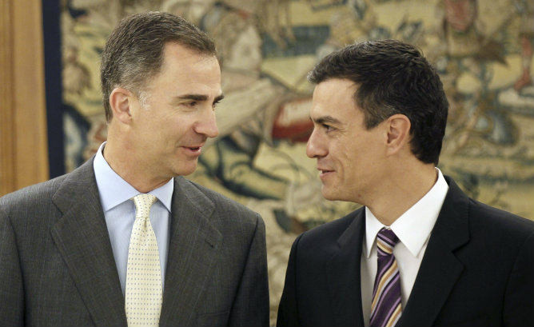

Huelva 10 de octubre de 2016
El Rey recibe a Iglesias, Sánchez y Rajoy en el cierre de la ronda de consultas para intentar la investidura.
Felipe VI concluye con los líderes de Podemos, PSOE y PP su ronda de consultas para proponer candidato a presidente

El Rey afronta este viernes la última jornada de la ronda de consultas a los partidos con representación parlamentaria para, en función de las posiciones que le han sido comunicadas en las audiencias, proponer un candidato a la investidura de la presidencia del Gobierno. El líder de Podemos, Pablo Iglesias, ha sido el primero en acudir a la cita para entrevistase con el jefe del Estado. Es la primera visita de Iglesias al Palacio de La Zarzuela, aunque no su primer encuentro con el Rey, a quien tuvo ocasión de saludar en sus días de eurodiputado en Bruselas durante una visita de Felipe VI al Parlamento Europeo. La entrevista se produce tras el incidente del pasado 12 de octubre, cuando el líder de Podemos aseguró que no había sido invitado a la recepción del Palacio Real y luego, tras reconocer que había recibido la invitación, declinó asistir al acto. Sin embargo, el líder socialista ha defendido en todo momento que primero corresponde a Rajoy, como representante del partido con más diputados, intentar ser investido como presidente.